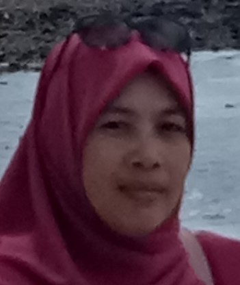
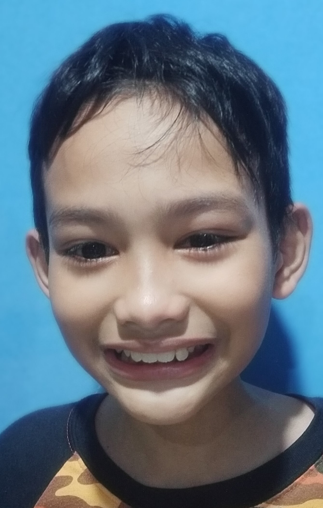
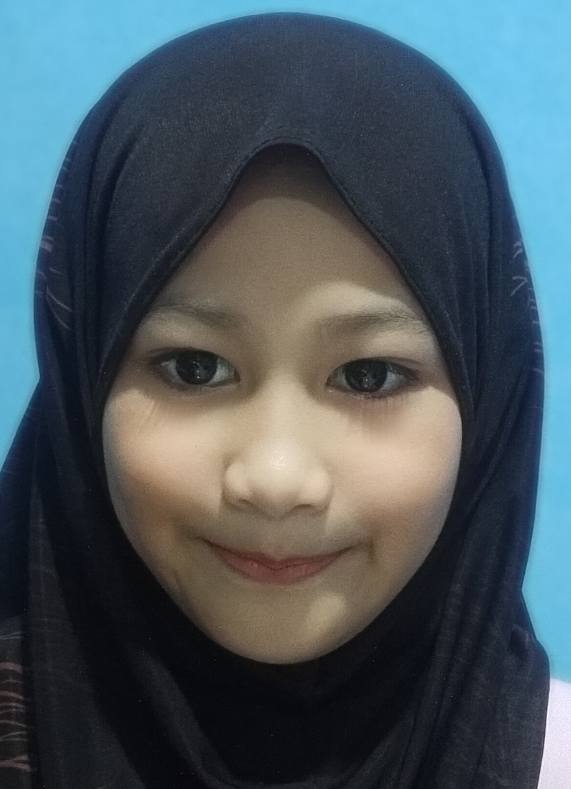
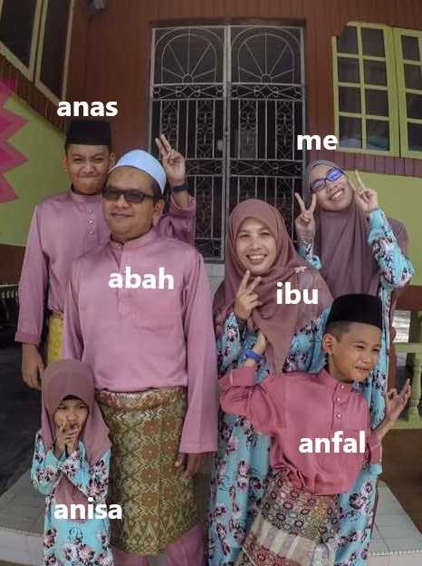

"Family is a gift that lasts forever"
| Abah |
Ibu | Anas | Anfal | Anisa |
| A family is a social group of people who stay together under the same roof in a society. It comprises two or more adults like
parents and grandparents and young children who are bound in a relationship by birth or blood. They are collectively known as family members. Each
family member is committed to each other in a mutual relationship. A family holds a special place in the life of an individual and the society in
which he/she lives. I cannot imagine living my life without my family by my side. Family is very important and valuable to me and is something that
should never be taken for granted. Without my family, a large part of my life and culture would be missing.
This is my small family. The head of our family is our father, Encik Mohamad Yusof bin Rahmat who is 47 years old. We called him "abah". Abah married our mother, Puan Siti Jamilah, 46 years old in 1999. I am the eldest daughter of four siblings. I have two brothers and a sister. First, Anas Amsyar (18 years old), Anfal Amzar (11 years old) and Anisa Nasuha (8 years old). |
 |
| Abah
Her full name is Mohamad Yusof bin Rahmat. Abah is the eldest of his 6 siblings. He was born on 3 July 1973 in Kuala Selangor, Selangor. He is a chief manufacturing operator at the PROTON HICOM factory, Shah Alam. He was firm and loving in educating us. For me, he is a person who works hard to provide pleasure and the best for our family. My dad is a superhero! |
| Ibu
His full name is Siti Jamilah binti Zainal Abidin. She was born on October 27, 1974 in Sg. Lui, Hulu Langat. She is the youngest of his 8 siblings. She is a teacher at Sekolah Rendah Agama Sg. Lui, Hulu Langat. His hobby is cooking. All the his dishes are very tasty and she is a loving mother takes care of our family. |
|